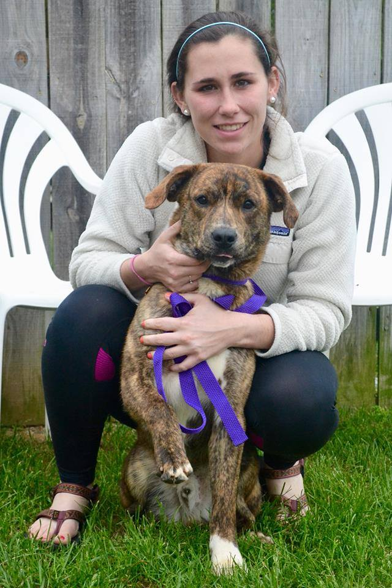

About Me
My name is Caroline Stewart. I'm a computer science major at Virginia Tech with mathematics and professional and technical writing minors.
In my free time I like going on runs, working out, surfing, hiking, reading, writing, drawing, and playing with my dog.
Why Computer Science?
I'm studying CS because I enjoy building things I can use, whether it's physically with my hands or with a computer program. Anything from solving puzzles to programming Arduinos to even making websites - I enjoy it all. I also enjoy the challenges I face when developing the logic for a project.Along with my computational modeling interests, I am also very passionate about "women in technology". I think it is so important for women to become involved in a field that is mostly made of men. There are so many opportunities for women to take part in the technological world, and I like to help get that word out, which is why I am an active member and officer in The Association for Women in Computing. I hope to expand the organization in the next few years to make it more beneficial to the current AWC members and to spark more interest in potential members.
My Work
Currently, I am an undergraduate researcher for NIMML at the Virginia Biocomplexity Institute, where I use machine learning to come up with algorithms to develop cures for Crohn's disease, C. diff, and colitis. We have yet to figure out a cure, but I'm slowly learning what it takes to do so. With the abundant amount of resources that are available to myself and other researchers at NIMML, I believe that there will be some amazing discoveries in the near future.The processes that NIMML is using to do research on immune mediated diseases is what this site is all about. Whether you have Crohn's Disease or you know someone with Crohn's Disease, I hope to give those who have some sort of understanding of Crohn's and C.diff a new hope for the future of these issues.